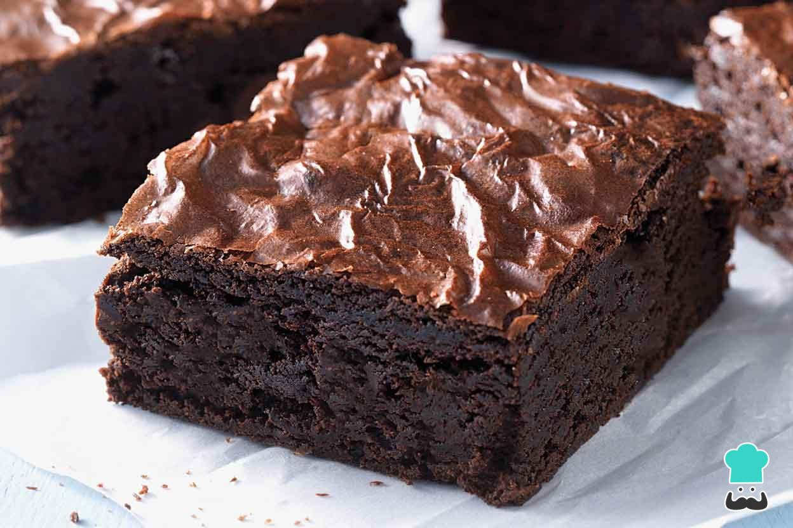
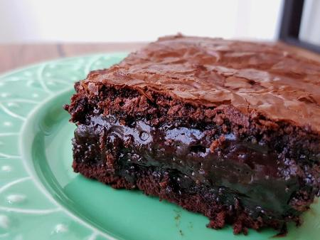

Sabe aquela receita deliciosa e sem complicações? Aprenda o passo a passo deste brownie delicioso e surpreenda sua família!!


Ingredientes
6 colheres (sopa) bem cheias, de margarina sem sal
3/4 xícara (chá) achocolatado
1/2 xícara (chá) chocolate em pó
1 e 1/4 xícara (chá) farinha de trigo
2 xícaras (chá) açúcar
4 ovos
2 pitadas de sal
1 colheres (chá) de extrato ou essência de baunilha
1 tablete de chocolate meio amargo picado em cubinhos
1/2 xícara (chá) de nozes picadas ou castanhas de caju granuladas
Modo de Preparo
Misture os ovos e o açúcar.
Em seguida, agregue todos os outros ingredientes até formar um creme uniforme.
Despeje em uma assadeira, forrada com papel-manteiga e leve ao forno médio por 40 minutos.
O brownie estará pronto quando a parte de cima estiver levemente corada e, ao se espetar um palito, ele esteja levemente úmido (devido ao chocolate derretido).
Corte em quadrados ainda quente e sirva com uma bola de sorvete de creme, ou congele num saquinho para freezer.
Para descongelar, coloque o brownie num prato de sobremesa e aqueça no micro-ondas, potência alta, por 1 minuto.